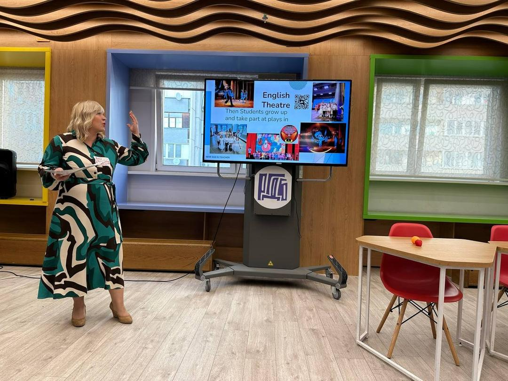
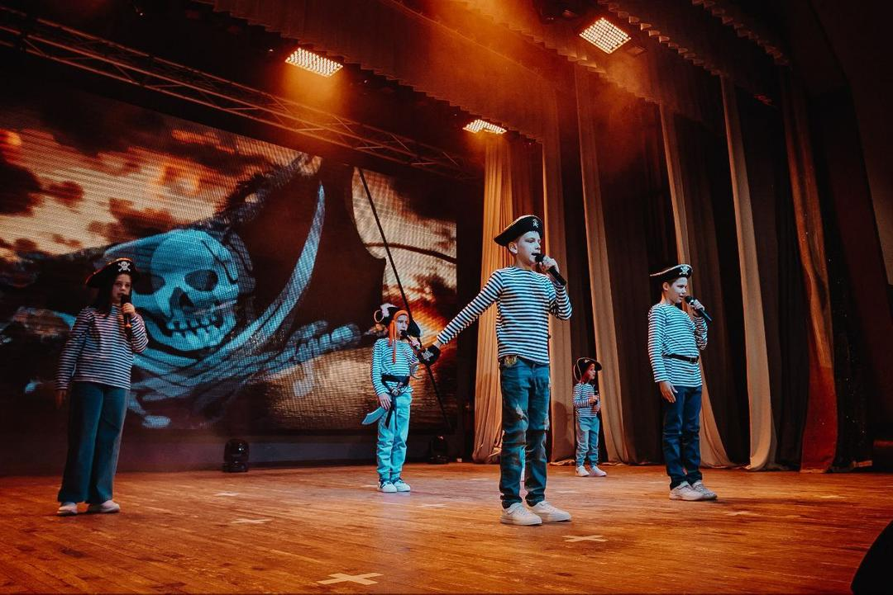

Для общения
Говорить свободнее
Практика языка для разговоров, поездок и повседневных ситуаций. Важнее применить фразу, чем выучить её «для галочки».
Преподаватель английского языка
Я Анна Козелкова. Помогаю применять английский в общении, учёбе, выступлениях и переговорах. Выбираем задачу — и занимаемся ради неё.

Английский в действииАнна рассказывает об English Theatre WoW на встрече преподавателей
Направления
Английский нужен для разных ситуаций. Выберите близкую цель и напишите Анне — она расскажет о подходящем формате и наборе.
Для общения
Практика языка для разговоров, поездок и повседневных ситуаций. Важнее применить фразу, чем выучить её «для галочки».
Для учёбы
Работа над английским для ОГЭ и Кембриджских экзаменов. В галерее есть реальные результаты учеников.
Для работы
Авторские курсы Анны по управленческим переговорам на английском: аргументы, решения и уверенная коммуникация.
Для смелости
English Theatre WoW соединяет язык, творчество и командную работу. Посмотрите, как это выглядит в жизни.
Доказательства, не обещания
За словами стоят экзамены, выступления, проекты и победа на чемпионате по переговорам. Каждый снимок можно открыть крупно.
Чемпионат по быстрым управленческим переговорам в бизнес-лагере «Путь Героя».
На исходной странице Анны опубликован результат ученицы: 98% выполнения и оценка «5».
Участники English Theatre WoW с дипломами после выступления.

EnglishПроект Анны
В English Theatre WoW язык звучит в репликах, движении и совместной работе. Дети выступают перед зрителями — фотографии и видео проекта доступны прямо здесь.
Знакомство
Преподаю английский, создаю авторские курсы и руковожу English Theatre WoW. Меня интересует язык, который помогает человеку действовать: ответить, выступить, договориться.
Рассказать о своей задачеГруппы и языковые проекты, подготовка учеников к экзаменам.
Автор курсов по управленческим переговорам на английском.
Член MELTA и NATE, спикер конференций для преподавателей английского.
Руководитель English Theatre WoW и участница фестивалей английского театра.
Фотоархив
Здесь собраны исходные снимки со страницы Анны: выступления, театр, занятия, экзамены и профессиональные события. Откройте фотографию и листайте стрелками.
Загружаем фотографии…
Первый шаг
Напишите Анне, кому нужен английский и для чего: общение, экзамен, переговоры или театр. Она подскажет, какой формат сейчас доступен, и расскажет о расписании и стоимости.
«Здравствуйте, Анна! Хочу узнать о занятиях. Моя цель — …»
Ответ и детали занятий — в личном сообщении Анны.